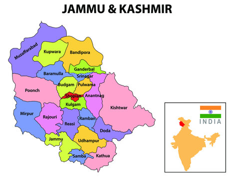

| Name: | Jammu and Kashmir |
|---|---|
| Capital: | Srinagar (summer), Jammu (winter) |
| Language: | Urdu, Kashmiri, Hindi, Dogri |
| Chief Minister: | Vacant (Union Territory) |
| Total Districts: | 20 |
| Population: | ~12.5 million (as per 2011 census) |
| Formation: | 26 October 1947 |
| Area: | 55,538 km² (19th largest in India) |
| Borders: | Himachal Pradesh, Punjab, Pakistan, China |
| Coastline: | None (Landlocked State) |
Know more